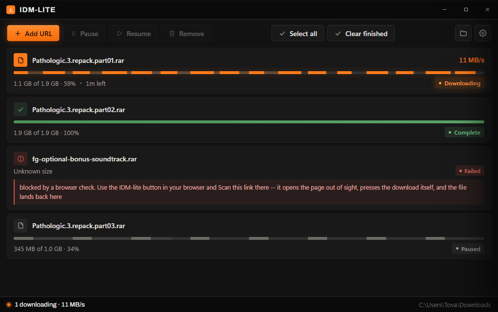
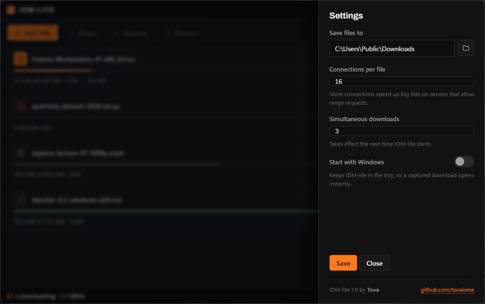
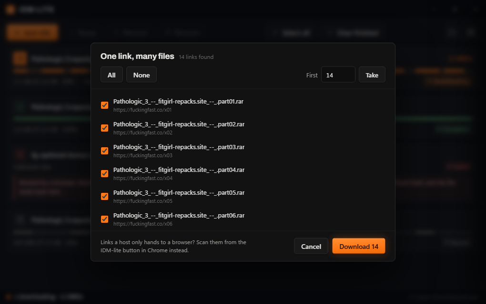
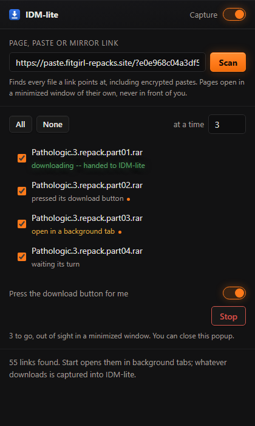
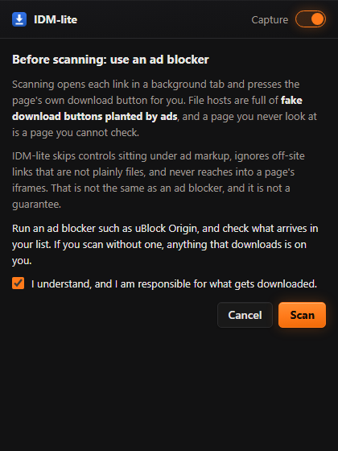

Your browser fetches on one connection and gives up when it drops. IDM-lite splits the file across sixteen, hands a stalled connection's work to an idle one, and resumes exactly where it stopped.
Sixteen connections on one file. The short ones are stealing work from the long ones.
Split a file into eight equal pieces and the slowest one decides when you finish, while seven sit idle at the end. IDM-lite re-splits instead: a connection that runs out of work takes the back half of whoever has the most left, again and again, down to 512 KiB.
Up to 32 per file, 16 by default. The window draws one lane per connection, where it actually is in the file.
Every slice's position is flushed to a sidecar as it goes. Close the app, lose the power, come back and it picks up where it stopped.
The extension hands over the URL with your cookies, referer and user agent, so a download that needs your session still works — at full speed.
Paste a mirror page, a folder index or an encrypted paste. It reads every file out of it and asks which ones you want.
Everything lands in the folder you picked in Settings. No dialog per file, ever.
update.exe asks GitHub for the newest release and runs the installer for you. No telemetry, no background checks.

One folder, set once. Connections per file, how many downloads at a time, and whether it starts with Windows — that is the whole of Settings. It lives in the tray, so a captured download opens the window in about 36 ms instead of paying for a cold start.

A repack is split across dozens of mirror links on one page. Paste that page — IDM-lite reads every link out of it, names each file, and lets you take all of them, the first ten, or exactly the ones you tick.

# that never reaches the server. IDM-lite strips it before fetching and decrypts in its own window, so the host never learns what you opened.
Capture on or off, a scan box that starts filled in with the tab you are on, the list of what it found, how many tabs to work through at a time, and a Stop that means stop. Close the popup whenever you like — the queue runs in the extension's worker, not in the popup.
Pressing a download button on a page you are not looking at is exactly where a fake one planted by an ad would catch you. The first scan asks you to accept that, and the clicker skips anything sitting under ad markup, ignores off-site links that are not plainly files, and never reaches into a page's iframes.
None of that replaces an ad blocker. Run one.

Same program on all three. Pick the file for your machine, load the extension once, and you are done.
IDM-lite-Setup-1.0.4.exe
Installs to %LOCALAPPDATA%\Programs\IDM-lite for your user only. The zip is the same thing in a folder you control, with Install.bat.
extension lives at%LOCALAPPDATA%\Programs\IDM-lite\extension
IDM-lite-1.0.4.dmg
Open it and drag IDM-lite to Applications. The first launch needs a right-click → Open, because the app is not notarized yet.
extension lives atIDM-lite.app/Contents/Resources/extension
idm-lite_1.0.4_amd64.deb
sudo apt install ./idm-lite_1.0.4_amd64.deb. On anything else take the tarball and run install.sh, which installs under ~/.local and needs no root.
extension lives at~/.local/share/idm-lite/extension
Open chrome://extensions, switch on Developer mode, click Load unpacked, and choose the folder above for your platform.
That is it. Anything your browser starts lands in IDM-lite. Click the toolbar button to scan a page for everything on it.
Almost nothing in it was really Windows. State goes to %LOCALAPPDATA%, ~/Library/Application Support or $XDG_DATA_HOME. The single-instance lock is an unshared handle on Windows and an flock elsewhere, both released by the kernel if the process dies. Registering with a browser writes registry values on Windows and drops the same manifest into a directory everywhere else, which is the simpler half.
WebView2 on Windows, WKWebView on macOS, WebKitGTK on Linux. One page, one design, drawn by whichever engine is already on the machine.
Reading an encrypted paste needs crypto.subtle, which needs a secure context. CI asks each engine on every push instead of assuming. All three say yes.
Over SSH or on a server it runs the engine without a window rather than failing to make one. The browser extension still hands downloads over.
A new, unsigned executable that installs itself, writes an uninstall entry and then downloads files for a living is the exact shape of a dropper. Defender's machine-learning model sometimes scores it as one — 1.0.2 was flagged Trojan:Win32/Bearfoos.A!ml on a clean machine. The !ml means a heuristic guess, not a match on known malware.
The installer no longer spawns a shell for anything. The Start Menu shortcut is written through the shell's own IShellLink interface instead of driving WScript.Shell through PowerShell; the uninstaller hands its own exe to MoveFileEx for deletion on reboot instead of asking PowerShell to sleep and delete it; and nothing launches a browser or Explorer at the end.
Writes an uninstall key so it appears in Add or remove programs, writes the native messaging keys so your browser can reach it, and puts two executables in %LOCALAPPDATA%\Programs\IDM-lite. That is what installing is.
Check the download against SHA256SUMS.txt on the release, or build it yourself from source and compare. Then report it to Microsoft at microsoft.com/wdsi/filesubmission — that is what clears it for everyone.